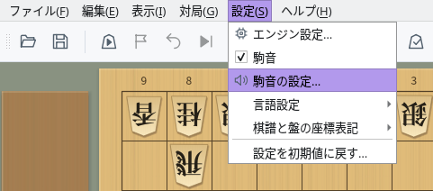
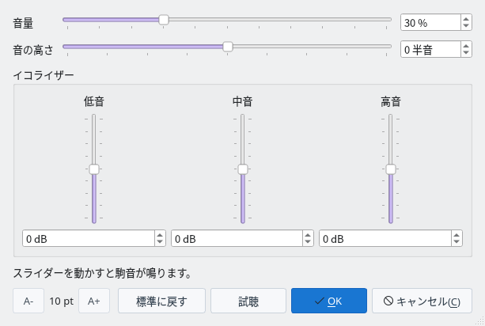

駒音
駒を指した瞬間に、盤に駒を打つ「パチッ」という音が鳴ります
駒音のオン・オフ
「設定」メニューから、いつでも駒音を切り替えられます
メニューバーの「設定」を開くと「駒音」の項目があり、チェックが付いていれば駒音が鳴ります。初期状態ではオンです。選ぶたびにオンとオフが切り替わります。


「設定」メニュー：「駒音」でオン・オフ、「駒音の設定…」で音を調整
オン・オフの状態は自動で保存され、次回の起動時にも使われます。メニュードックの「設定」タブにも同じ「駒音」「駒音の設定…」のボタンがあります。
音量と音質の調整
「駒音の設定」ダイアログで、音量・音の高さ・イコライザーを調整できます
ダイアログには音量と音の高さの横スライダー、イコライザーの低音・中音・高音の縦スライダーが並びます。スライダーを動かすと、離したときに今の設定の駒音が鳴るので、音を聞きながら調整できます。「試聴」を押せば、いつでも今の設定の音を確かめられます（駒音をオフにしていても鳴ります）。


駒音の設定ダイアログ（初期状態）
- 音量：0〜100%。初期値は30%です。耳の感覚に合わせた目盛りになっています。
- 音の高さ：-12〜+12半音。上げると高く短い音、下げると低く長い音になります。
- イコライザー：低音・中音・高音をそれぞれ-12〜+12dBで調整します。中音を上げると打つ感じが強まり、高音を下げると柔らかい音になります。
各スライダーの右や下の欄に数値を直接入力することもできます。
「OK」で設定を確定します。「キャンセル」を押すと、ダイアログを開いたときの設定に戻ります。「標準に戻す」を押すと、音量30%・音の高さ0・イコライザー0の初期設定に戻せます。確定した設定は自動で保存され、次回の起動時にも使われます。
左下の「A-」「A+」でダイアログの文字の大きさを変えられます。文字の大きさとダイアログの大きさも次回に引き継がれます。
駒音が鳴る場面
対局で盤上の駒が動いたときに鳴り、棋譜の閲覧や局面編集では鳴りません
| 場面 | 駒音 | 補足 |
|---|---|---|
| 人間の着手 | 鳴る | 人間対人間、人間対エンジンで自分が指したとき |
| エンジンの着手 | 鳴る | 人間対エンジン、エンジン対エンジンでエンジンが指したとき |
| 通信対局（CSA） | 鳴る | 自分の着手と相手の着手の両方 |
| 定跡手の着手 | 鳴る | 定跡ウィンドウから指した手も、盤上の着手として扱われます |
| 詰将棋対局 | 鳴る | 自分の手と玉方の応手の両方。「正解手順」での再生では鳴りません |
| 棋譜の再生・分岐の切り替え | 鳴らない | 読み込んだ棋譜を進めたり戻したりする操作 |
| 局面編集・解析・検討・詰み探索 | 鳴らない | 駒の配置の変更や、エンジンの読み筋の表示 |
駒音は、実際の駒音の録音を分析し、その特徴に合わせて合成した音です。Qt Multimediaを使い、OSの標準の音声出力から再生されます。